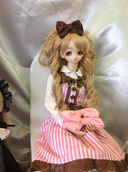
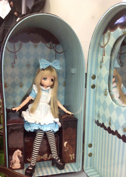
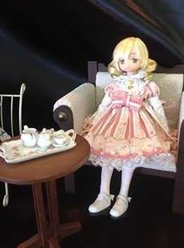
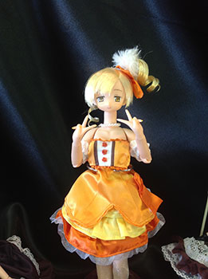

概略自然言語処理の応用 (日本語入力や対話システムなど) に興味があります。ブログで自然言語処理関連の技術情報を発信したり、GitHubでOSSを公開しています。 連絡先yknikgm@gmail.com |
音楽 | MomoseのJazzmaster | Warwickのベース | チーズケーキ | パンケーキ | 麗音 | CRESCENT | DIR EN GREY | MUNIMUNI | dummy-xD | emmurée | cali≠gari | LUNA SEA | 黒夢 | ROUAGE | BUCK-TICK | Eins:Vier | 白石麻衣 | 深田恭子 | 龍が如く | CAVEのシューティング (怒首領蜂大往生とかケツイとか) | 東方Project | 女神転生シリーズ | ペルソナシリーズ | ラフロイグ | ピンク色 | サンリオ | 百合 | 不健康そうな色のお菓子 | 血液 | ブラジャー | ブラレット | まるいもの | ふわふわのベッド | アイドル | あまいもの | 生クリーム | 中本の冷やし味噌 | 女子の自撮り | コンビニ | ギター | キラキラした音がでるエフェクター | 高円寺 | 新宿 | 渋谷 | 色のつく入浴剤 | メイク | 女子の二の腕 | プリクラ | ふわふわなバスタオル | 音楽 | ストレートアイロン | 黒いワンピース | きらきらしてるもの | ツインテール | 自然言語処理 | 高額商品券
